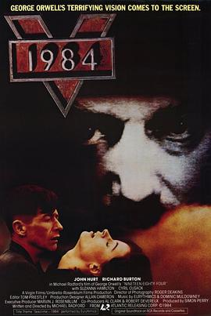

一九八四 / Nineteen Eighty-Four
又名：1984
看看这部1984年拍的《1984》吧
作品信息
| 导演 | 迈克尔·莱德福 |
| 编剧 | 迈克尔·莱德福 / 乔治·奥威尔 |
| 主演 | 约翰·赫特 / 理查德·伯顿 / 苏珊娜·汉密尔顿 / 西里尔·库萨克 / 格莱格·费什尔 / James Walker / Andrew Wilde / 戴维·特里韦纳 / 戴维·坎恩 / Anthony Benson / Peter Frye / 罗格·洛伊德-派克 / Rupert Baderman / Corinna Seddon / 玛莎·佩西 / 梅丽娜·肯德尔 / Joscik Barbarossa / 约翰·博斯沃尔 / 鲍勃·弗莱格 |
| 类型 | 剧情 / 爱情 / 科幻 / 惊悚 |
| 制片国家/地区 | 英国 |
| 语言 | 英语 |
| 上映日期 | 1984-10-10(英国) |
| 片长 | 113分钟 |
| IMDb | tt0087803 |
说过什么
2026-04-03 08:28:00
广播 · 想看
看看这部1984年拍的《1984》吧
最后一次看到是 2026-08-01T11:07:51+10:00 · 豆瓣原页